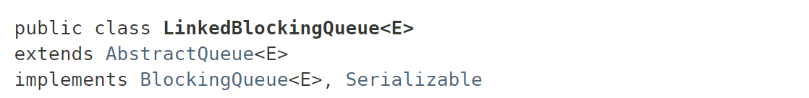
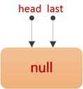
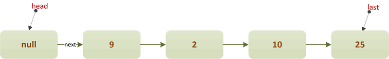

LinkedBlockingQueue是在JDK1.5时，随着J.U.C包引入的一种阻塞队列，它实现了BlockingQueue接口，底层基于单链表实现：

LinkedBlockingQueue是一种近似有界阻塞队列，为什么说近似？因为LinkedBlockingQueue既可以在初始构造时就指定队列的容量，也可以不指定，如果不指定，那么它的容量大小默认为Integer.MAX_VALUE。
LinkedBlockingQueue除了底层数据结构（单链表）与ArrayBlockingQueue不同外，另外一个特点就是：
它维护了两把锁——takeLock和putLock。
takeLock用于控制出队的并发，putLock用于入队的并发。这也就意味着，同一时刻，只能只有一个线程能执行入队/出队操作，其余入队/出队线程会被阻塞；但是，入队和出队之间可以并发执行，即同一时刻，可以同时有一个线程进行入队，另一个线程进行出队，这样就可以提升吞吐量。
在ArrayBlockingQueue章节中，我们说过，ArrayBlockingQueue维护了一把全局锁，无论是出队还是入队，都共用这把锁，这就导致任一时间点只有一个线程能够执行。那么对于“生产者-消费者”模式来说，意味着生产者和消费者不能并发执行。
LinkedBlockingQueue提供了三种构造器：
/**
* 默认构造器.
* 队列容量为Integer.MAX_VALUE.
*/
public LinkedBlockingQueue() {
this(Integer.MAX_VALUE);
}
/**
* 显示指定队列容量的构造器
*/
public LinkedBlockingQueue(int capacity) {
if (capacity <= 0) throw new IllegalArgumentException();
this.capacity = capacity;
last = head = new Node<E>(null);
}
/**
* 从已有集合构造队列.
* 队列容量为Integer.MAX_VALUE
*/
public LinkedBlockingQueue(Collection<? extends E> c) {
this(Integer.MAX_VALUE);
final ReentrantLock putLock = this.putLock;
putLock.lock(); // 这里加锁仅仅是为了保证可见性
try {
int n = 0;
for (E e : c) {
if (e == null) // 队列不能包含null元素
throw new NullPointerException();
if (n == capacity) // 队列已满
throw new IllegalStateException("Queue full");
enqueue(new Node<E>(e)); // 队尾插入元素
++n;
}
count.set(n); // 设置元素个数
} finally {
putLock.unlock();
}
}
可以看到，如果不指定容量，那么它的容量大小默认为Integer.MAX_VALUE。另外，LinkedBlockingQueue使用了一个原子变量AtomicInteger记录队列中元素的个数，以保证入队/出队并发修改元素时的数据一致性。
public class LinkedBlockingQueue<E> extends AbstractQueue<E>
implements BlockingQueue<E>, java.io.Serializable {
/**
* 队列容量.
* 如果不指定, 则为Integer.MAX_VALUE
*/
private final int capacity;
/**
* 队列中的元素个数
*/
private final AtomicInteger count = new AtomicInteger();
/**
* 队首指针.
* head.item == null
*/
transient Node<E> head;
/**
* 队尾指针.
* last.next == null
*/
private transient Node<E> last;
/**
* 出队锁
*/
private final ReentrantLock takeLock = new ReentrantLock();
/**
* 队列空时，出队线程在该条件队列等待
*/
private final Condition notEmpty = takeLock.newCondition();
/**
* 入队锁
*/
private final ReentrantLock putLock = new ReentrantLock();
/**
* 队列满时，入队线程在该条件队列等待
*/
private final Condition notFull = putLock.newCondition();
/**
* 链表结点定义
*/
static class Node<E> {
E item;
Node<E> next; // 后驱指针
Node(E x) {
item = x;
}
}
//...
}
构造完成后，LinkedBlockingQueue的初始结构如下：

插入部分元素后的LinkedBlockingQueue结构：

由于接口和ArrayBlockingQueue完全一样，所以LinkedBlockingQueue会阻塞线程的方法也一共有4个：put(E e)、offer(e, time, unit)和take()、poll(time, unit)，我们先来看插入元素的方法。
插入元素——put(E e)
/**
* 在队尾插入指定的元素.
* 如果队列已满，则阻塞线程.
*/
public void put(E e) throws InterruptedException {
if (e == null) throw new NullPointerException();
int c = -1;
Node<E> node = new Node<E>(e);
final ReentrantLock putLock = this.putLock;
final AtomicInteger count = this.count;
putLock.lockInterruptibly(); // 获取“入队锁”
try {
while (count.get() == capacity) { // 队列已满, 则线程在notFull上等待
notFull.await();
}
enqueue(node); // 将新结点链接到“队尾”
/**
* c+1 表示的元素个数.
* 如果，则唤醒一个“入队线程”
*/
c = count.getAndIncrement(); // c表示入队前的队列元素个数
if (c + 1 < capacity) // 入队后队列未满, 则唤醒一个“入队线程”
notFull.signal();
} finally {
putLock.unlock();
}
if (c == 0) // 队列初始为空, 则唤醒一个“出队线程”
signalNotEmpty();
}
插入元素时，首先需要获得“入队锁”，如果队列满了，则当前线程需要在notFull条件队列等待；否则，将新元素链接到队列尾部。
这里需要注意的是两个地方：
①每入队一个元素后，如果队列还没满，则需要唤醒其它可能正在等待的“入队线程”：
/**
* c+1 表示的元素个数.
* 如果，则唤醒一个“入队线程”
*/
c = count.getAndIncrement(); // c表示入队前的队列元素个数
if (c + 1 < capacity) // 入队后队列未满, 则唤醒一个“入队线程”
notFull.signal();
② 每入队一个元素，都要判断下队列是否空了，如果空了，说明可能存在正在等待的“出队线程”，需要唤醒它：
if (c == 0) // 队列为空, 则唤醒一个“出队线程”
signalNotEmpty();
这里为什么不像ArrayBlockingQueue那样，入队完成后，直接唤醒一个在notEmpty上等待的出队线程？
因为ArrayBlockingQueue中，入队/出队用的是同一把锁，两者不会并发执行，所以每入队一个元素（拿到锁），就可以通知可能正在等待的“出队线程”。（同一个锁的两个条件队列：notEmpty、notFull）
ArrayBlockingQueue中的enqueue方法：
private void enqueue(E x) {
final Object[] items = this.items;
items[putIndex] = x;
if (++putIndex == items.length) // 队列已满,则重置索引为0
putIndex = 0;
count++; // 元素个数+1
notEmpty.signal(); // 唤醒一个notEmpty上的等待线程(可以来队列取元素了)
}
而LinkedBlockingQueue中，入队/出队用的是两把锁，入队/出队是会并发执行的。入队锁对应的是notFull条件队列，出队锁对应的是notEmpty条件队列，所以每入队一个元素，应当立即去唤醒可能阻塞的其它入队线程。当队列为空时，说明后面再来“出队线程”，一定都会阻塞，所以此时可以去唤醒一个出队线程，以提升性能。
试想以下，如果去掉上面的①和②，当入队线程拿到“入队锁”，入队元素后，直接尝试唤醒出队线程，会要求去拿出队锁，这样持有锁A的同时，再去尝试获取锁B，很可能引起死锁，就算通过打破死锁的条件避免死锁，每次操作同时获取两把锁也会降低性能。
删除元素——table()
删除元素的逻辑和插入元素类似。删除元素时，首先需要获得“出队锁”，如果队列为空，则当前线程需要在notEmpty条件队列等待；否则，从队首出队一个元素：
/**
* 从队首出队一个元素
*/
public E take() throws InterruptedException {
E x;
int c = -1;
final AtomicInteger count = this.count;
final ReentrantLock takeLock = this.takeLock; // 获取“出队锁”
takeLock.lockInterruptibly();
try {
while (count.get() == 0) { // 队列为空, 则阻塞线程
notEmpty.await();
}
x = dequeue();
c = count.getAndDecrement(); // c表示出队前的元素个数
if (c > 1) // 出队前队列非空, 则唤醒一个出队线程
notEmpty.signal();
} finally {
takeLock.unlock();
}
if (c == capacity) // 队列初始为满，则唤醒一个入队线程
signalNotFull();
return x;
}
/**
* 队首出队一个元素.
*/
private E dequeue() {
Node<E> h = head;
Node<E> first = h.next;
h.next = h; // help GC
head = first;
E x = first.item;
first.item = null;
return x;
}
上面需要的注意点和插入元素一样：
①每出队一个元素前，如果队列非空，则需要唤醒其它可能正在等待的“出队线程”：
c = count.getAndDecrement(); // c表示出队前的元素个数
if (c > 1) // 出队前队列非空, 则唤醒一个出队线程
notEmpty.signal();
② 每入队一个元素，都要判断下队列是否满，如果是满的，说明可能存在正在等待的“入队线程”，需要唤醒它：
if (c == capacity) // 队列初始为满，则唤醒一个入队线程
signalNotFull();
归纳一下，LinkedBlockingQueue和ArrayBlockingQueue比较主要有以下区别：
Integer.MAX_VALUE，近似于无界）；